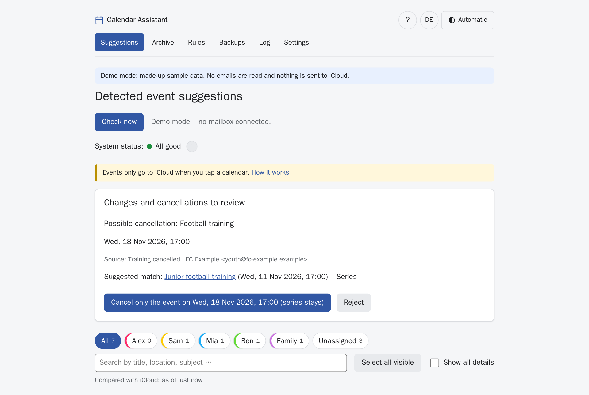
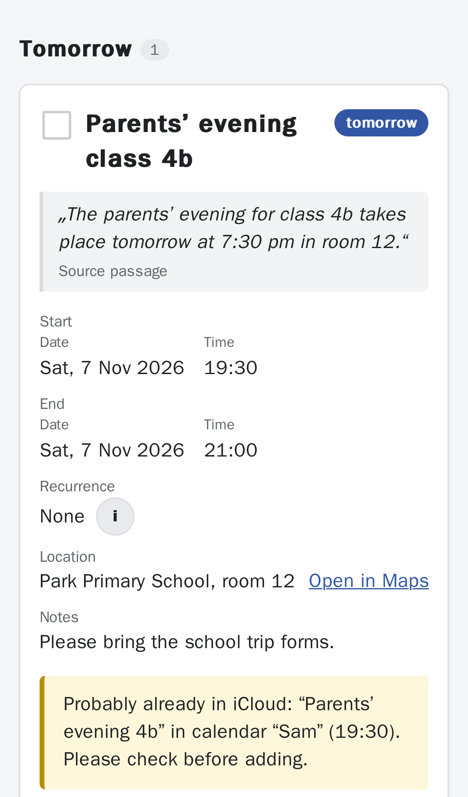
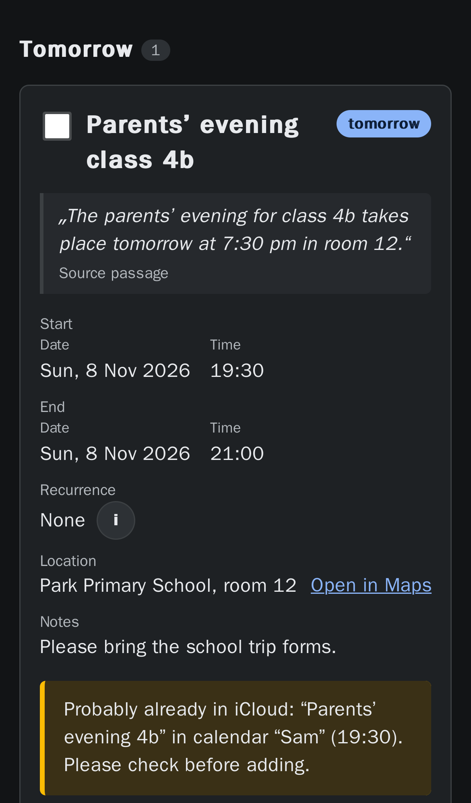
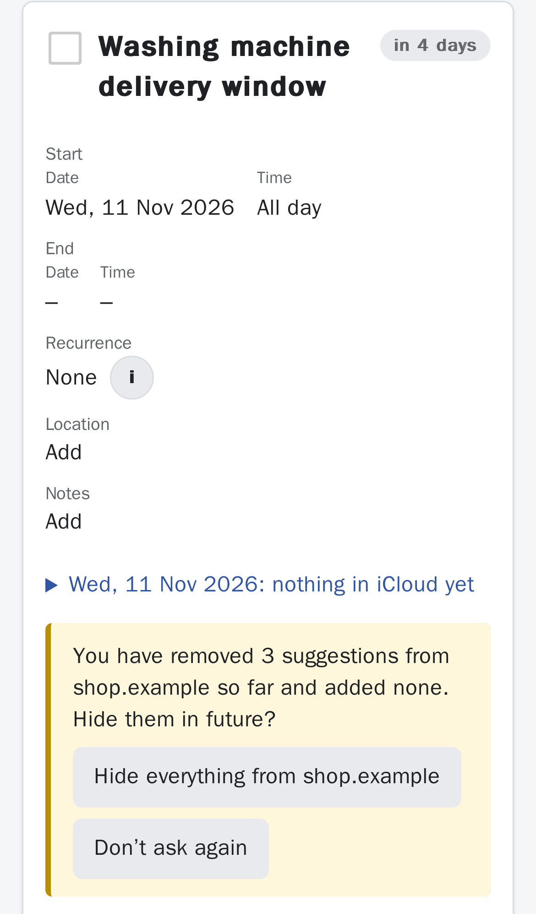
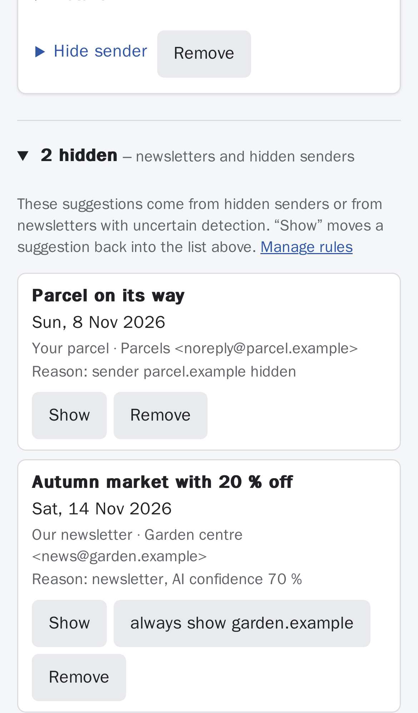
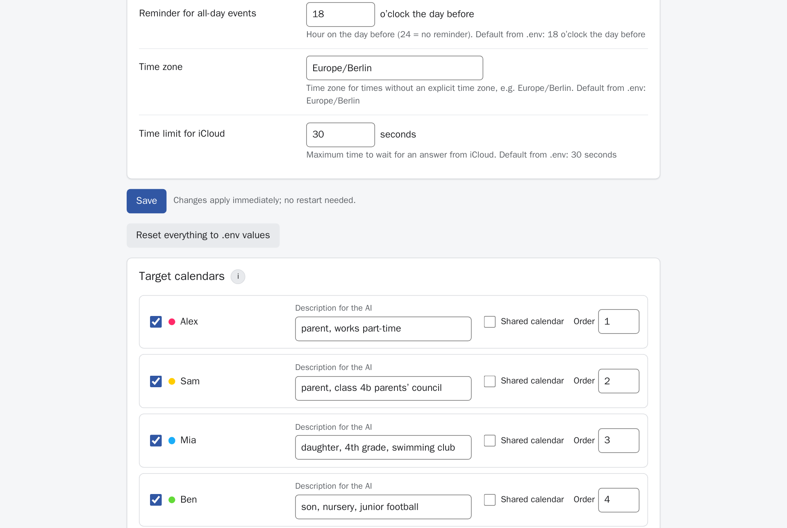
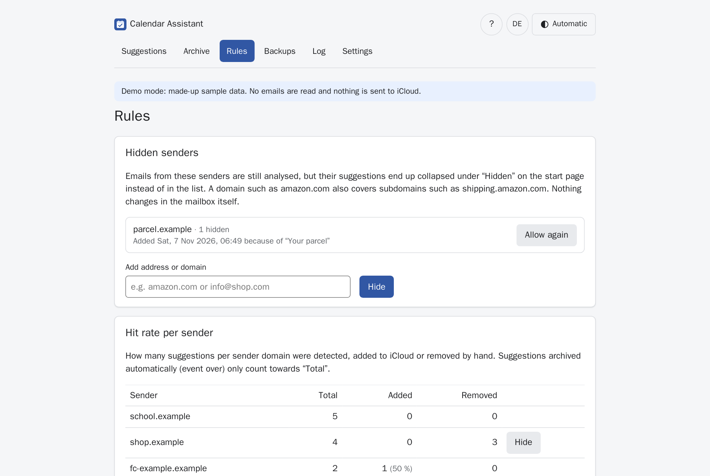
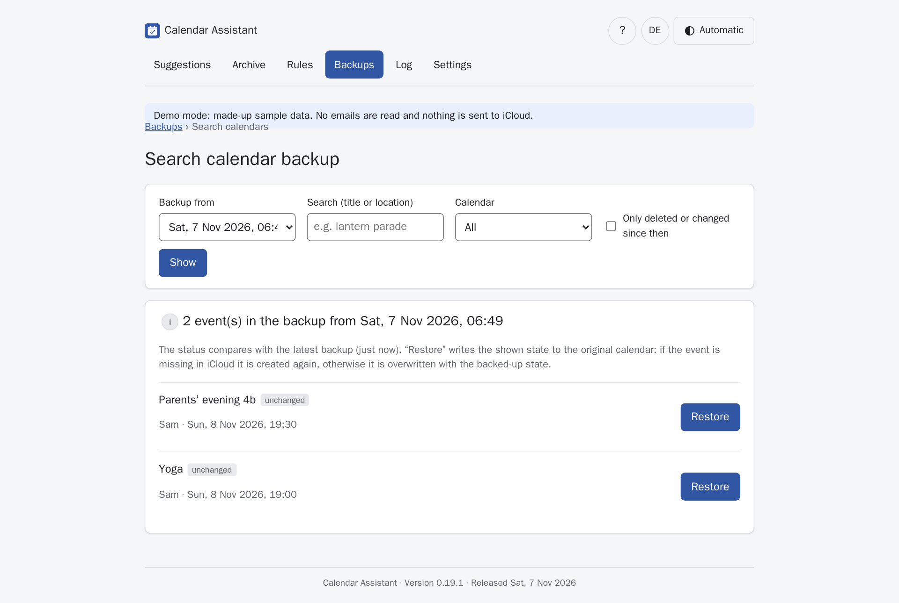
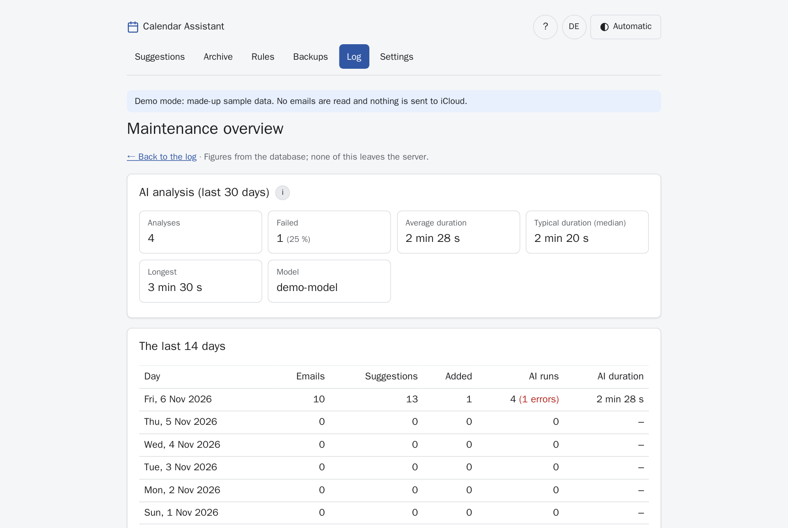

Events from your emails – detected by your AI, reviewed by you.
Calendar Assistant reads along in your mailbox, finds events in school, club and doctor’s emails, PDFs, photos and invitations, and shows them as suggestions. One tap on a calendar name and the event is in iCloud. Everything runs on your own server.

How it works
Nothing reaches your calendar unreviewed. The app suggests – you decide.
- Read along. The mailbox is opened read-only. The server reports new emails instantly (IMAP IDLE).
- Detect. Calendar invitations are read exactly; everything else is analysed by an AI on your server – scans and photos included.
- Review. Each card shows the passage from the email, the AI’s confidence and what is already in iCloud that day.
- Add. Tapping a calendar adds the event with a reminder. You can always undo.
Features
Built for family life: many senders, little time, and the calendar has to be right.
Understands many formats
Email text, PDFs (scanned too), images and .ics invitations from Outlook, rail operators or practice software.
Series and cancellations
“Every Tuesday until Easter, except during the holidays” becomes a series. Follow-up emails with changes or cancellations are presented for confirmation.
Less noise
Shipping, advertising and newsletter emails are recognised. You can hide annoying senders – without losing anything.
Learns as you go
Correct the calendar for a sender once, and the app remembers it for similar events. Each calendar gets a description for the AI.
No double bookings
Warnings about duplicates, events already in iCloud and overlaps in the chosen calendar.
Safely backed up
Daily backup of the app data and a versioned backup of your iCloud calendars – deleted events can be restored one by one.
For phone and tablet
Works as a home-screen app with pull to refresh, light/dark mode and large touch targets.
German and English
Interface in both languages, switchable per device.
What makes it different
Your data stays with you
With a local AI (e.g. LM Studio or Ollama) no email leaves your network. Only suggestions with a short quote are stored – not the emails themselves.
Read-only, write on demand
The mailbox is never changed. The app only writes to iCloud when you tap – and only to the calendars you allowed.
Honest about uncertainty
If the AI is unsure, the card is marked. Assumed end times are labelled “assumed”.
No cloud account, no subscription
One Docker container and one settings file. You can even try it without any mailbox in demo mode.
Screenshots
All screenshots come from the built-in demo mode with made-up data.








Installation
About 15 minutes. You need a machine on your home network that runs all the time (mini PC, NAS with Docker, Raspberry Pi 4/5).
1. Requirements
- Docker with Docker Compose – guide: docs.docker.com/engine/install
- A mailbox with IMAP access. Ideally a separate address you forward event emails to, e.g.
events@your-domain.com. - An AI with an OpenAI-compatible API, e.g. LM Studio or Ollama. For photos and scans, a model with image recognition (vision).
- For iCloud: an app-specific password (step 3).
2. Prepare iCloud
- Sign in at account.apple.com → Sign-In and Security → App-Specific Passwords → create a new password, e.g. “Calendar Assistant”. You will need it in the setup wizard in a moment.
- In the Calendar app, create the calendars events should go to – e.g. one per person and a shared one.
3. Install and start
mkdir kalender-assistent && cd kalender-assistent
curl -fsSLO https://raw.githubusercontent.com/norcon/kalender-assistent/main/compose.yaml
curl -fsSL https://raw.githubusercontent.com/norcon/kalender-assistent/main/.env.example -o .env
mkdir -p data backups
sudo chown 100:101 data backups
sudo chmod 700 data backups
docker compose --profile updater up -d4. Setup wizard
Open http://<server-ip>:8080 in your browser. The wizard guides you through five steps and checks every connection right away:
- Language and time zone
- Mailbox – server, user, password; then choose the folder from the list.
- AI – address of the AI server (LM Studio:
http://host.docker.internal:1234/v1, Ollama:http://host.docker.internal:11434/v1), pick a model from the list and try it with a sample email. - iCloud – Apple ID and app-specific password; then choose the target calendars and add a short description for the AI to each.
- Save and start – the app restarts with the new settings.
.env and restart with docker compose up -d.On a phone: open the page in the browser → Share → Add to Home Screen.
Without the updater, or by hand
Without the updater (docker compose up -d without --profile updater) the wizard shows the finished lines for .env at the end for you to copy. Alternatively, put at least the following into .env before starting:
IMAP_HOST=imap.example.org
IMAP_USERNAME=events@example.org
IMAP_PASSWORD='your-mail-password'
AI_BASE_URL=http://host.docker.internal:1234/v1
AI_MODEL=model-name
CALDAV_USERNAME=your-apple-id@example.org
CALDAV_APP_PASSWORD=xxxx-xxxx-xxxx-xxxx
TARGET_CALENDARS=Alex,Sam,Family
APP_LANGUAGE=enPut passwords with special characters in single quotes.
Just try it first (demo mode)
Without mailbox, AI or iCloud, with made-up sample data:
docker run --rm -p 8080:8000 -e DEMO_MODE=1 -e APP_LANGUAGE=en ghcr.io/norcon/kalender-assistent:latestThen open http://localhost:8080.
Update and roll back
With one click (recommended)
Enable the updater once:
docker compose --profile updater up -dThe app then shows new versions with their changes under Backups → Version and updates. One tap is enough: the app creates a full backup, switches versions and checks that everything starts cleanly – otherwise it returns to the previous version by itself. Switching to an earlier version works there too, optionally with the data from before the last update.
By hand
cd kalender-assistent
docker compose pull
docker compose up -dThe database is upgraded automatically on start. The app makes a backup every night; before an update you can create an extra one under Backups → Back up now.
Back to an earlier version
Put the version you want into .env (all versions are listed in the changelog):
KALENDER_VERSION=0.16.1docker compose pull
docker compose up -dIf the newer version has already changed the data: restore the backup from before the update under Backups. To return to the latest version, remove the KALENDER_VERSION line again.
Backup
Everything important lives in two folders next to compose.yaml:
| Folder | Contents |
|---|---|
data/ | database with suggestions, rules, history and settings |
backups/ | daily database backups and the versioned backup of your iCloud calendars |
Copy both folders and your .env to a second device regularly, e.g. a NAS – the built-in backups live on the same disk.
FAQ
Does it work without iCloud?
iCloud is what has been tested. Other CalDAV servers (e.g. Nextcloud) probably work if you change CALDAV_URL – feedback welcome. Without calendar access the app still shows the suggestions.
Which AI do I need?
Any API that speaks the OpenAI “Chat Completions” format. Locally, a current model with image recognition is recommended so that photos of school letters and scanned PDFs work too. The maintenance overview shows how long an analysis takes.
Can I use a cloud AI service?
Technically yes (AI_BASE_URL and AI_API_KEY). Email contents are then sent to that service – decide consciously.
What about advertising and parcel emails?
The AI is instructed to ignore them. Whatever slips through you can hide for the whole sender with one tap; newsletters with uncertain detection end up under “Hidden” automatically.
Is the AI prompt in English?
The prompt is in German, but current models handle English emails with it just fine. Technical log messages are in German as well.
How do I know everything is running?
See the system status on the start page, the Log and the Maintenance overview. The container also reports its health to Docker (docker compose ps shows “healthy”).